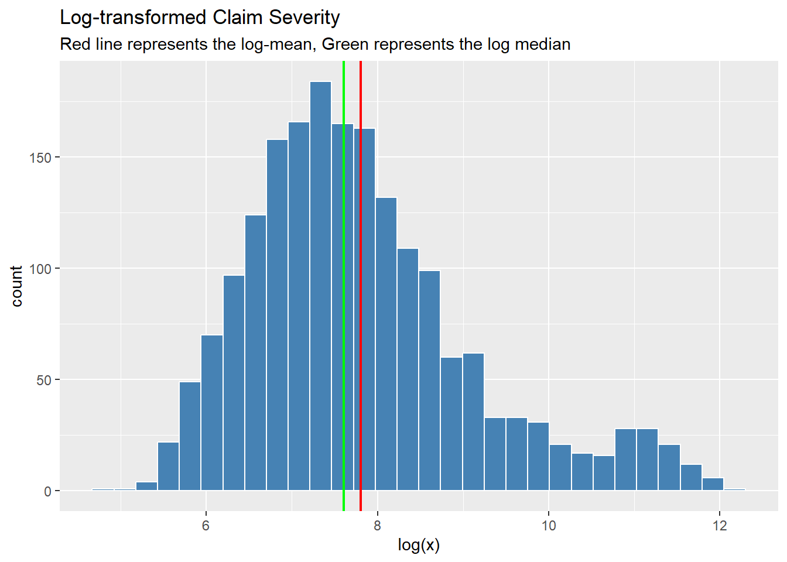

pacman::p_load(tidyverse, readxl, ggrepel, directlabels, readr, rio, knitr, pander, downloader, dplyr, plotly, ggplot2, ggthemes, haven, ggdist, janitor, MASS, here)
path = "srcsc-2026-claims-workers-comp.xlsx"
work_comp_freq = read_excel(path, sheet = "freq")
work_comp_sev = read_excel(path, sheet = "sev")workers compensation
Load data - libraries
Combing Rows and Filtering
work_comp_pol = work_comp_freq %>%
filter(!is.na(exposure), !is.na(claim_count), exposure > 0) %>%
group_by(policy_id) %>%
summarise(
exposure_pol = sum(exposure, na.rm = TRUE),
claims_pol = sum(claim_count, na.rm = TRUE),
.groups = "drop"
)Estimating claim Frequency
# Expected number of claims, normalized by exposure
lambda_hat = sum(work_comp_pol$claims_pol) / sum(work_comp_pol$exposure_pol)
lambda_hat[1] 0.02820411# expected number of claims per policy with NO exposure adjustment.
mean_claims = mean(work_comp_pol$claims_pol)
var_claims = var(work_comp_pol$claims_pol)
# variance normalized by expected claims per policy (dispersion)
dispersion_ratio = var_claims / mean_claims
c(mean_claims = mean_claims, var_claims = var_claims, dispersion_ratio = dispersion_ratio) mean_claims var_claims dispersion_ratio
0.6723619 1.0721500 1.5946025 # we use dispersion to see if possion would be a good fit (mean = vairance)
# we will use neg-binomial, as varaince is 50% greater than meanMoving on to Serverity Modeling (this just means the size of the claims)
# grab the claim amount $$, and filter it
x = work_comp_sev$claim_amount
x = as.numeric(x)
x = x[is.finite(x) & !is.na(x) & x > 0]
# distribution parameters for claim amount
mu = mean(log(x))
sigma = sd(log(x))
# this is lognormal mean and median
mean_sev = exp(mu + 0.5*sigma^2)
median_sev = exp(mu)
c(meanlog = mu, sdlog = sigma, mean_severity = mean_sev, median_severity = median_sev) meanlog sdlog mean_severity median_severity
7.807092 1.322341 5892.199020 2457.971582 # notice the right skew of the data (mean to median)Visuals
# A histogram of my log normal.
ggplot(data.frame(x), aes(x = log(x))) +
geom_histogram(fill = "steelblue", color = "white") +
geom_vline(xintercept = mu, color = "red", size=.8) + # Mean in log-space
geom_vline(xintercept = median(log(x)), color = "green", size=.8) + # Mean in log-space
labs(title = "Log-transformed Claim Severity",
subtitle = "Red line represents the log-mean, Green represents the log median")Warning: Using `size` aesthetic for lines was deprecated in ggplot2 3.4.0.
ℹ Please use `linewidth` instead.`stat_bin()` using `bins = 30`. Pick better value `binwidth`.
ggplot(data.frame(x), aes(sample = log(x))) +
stat_qq(color = "steelblue", alpha = 0.5) +
stat_qq_line(color = "red") +
labs(title = "Normal Q-Q Plot (Log-transformed Claims)",
x = "Theoretical Quantiles",
y = "Sample Quantiles")
Comapring Distribution to Gamma
# Lognormal log-likelihood + AIC
loglik_logn = sum(dlnorm(x, meanlog = mu, sdlog = sigma, log = TRUE))
aic_logn = 2*2 - 2*loglik_logn
# Gamma MOM estimates + log-likelihood + AIC
m = mean(x); v = var(x)
shape_hat = m^2 / v
rate_hat = m / v
loglik_gam = sum(dgamma(x, shape = shape_hat, rate = rate_hat, log = TRUE))
aic_gam = 2*2 - 2*loglik_gam
data.frame(
Model = c("Lognormal", "Gamma"),
AIC = c(aic_logn, aic_gam),
row.names = NULL
) Model AIC
1 Lognormal 36370.79
2 Gamma 38883.83# we will choose lognormal, better fit then gammaTail Summaries
q95 = qlnorm(0.95, meanlog = mu, sdlog = sigma)
q99 = qlnorm(0.99, meanlog = mu, sdlog = sigma)
pander(c(q95_logn = q95, q99_logn = q99))| q95_logn | q99_logn |
|---|---|
| 21637 | 53280 |
pander(quantile(x, probs = c(0.90, 0.95, 0.99)))| 90% | 95% | 99% |
|---|---|---|
| 15755 | 47442 | 97259 |
pander(mean(x))7828
Final report Sumamry
# chat-gpt
delta_aic = aic_gam - aic_logn
cat(
"- **Baseline frequency (lambda_hat):** ", round(lambda_hat, 4), " claims per exposure-year\n",
"- **Overdispersion (Var/Mean):** ", round(dispersion_ratio, 3), " → Negative Binomial preferred\n",
"- **Severity model:** Lognormal (meanlog = ", round(mu, 3), ", sdlog = ", round(sigma, 3), ")\n",
"- **Mean severity (Lognormal):** $", format(round(mean_sev, 0), big.mark=","), "\n",
"- **AIC comparison (Gamma - Lognormal):** ΔAIC = ", round(delta_aic, 1), " (positive favors Lognormal)\n",
sep = ""
)- **Baseline frequency (lambda_hat):** 0.0282 claims per exposure-year
- **Overdispersion (Var/Mean):** 1.595 → Negative Binomial preferred
- **Severity model:** Lognormal (meanlog = 7.807, sdlog = 1.322)
- **Mean severity (Lognormal):** $5,892
- **AIC comparison (Gamma - Lognormal):** ΔAIC = 2513 (positive favors Lognormal)Part 2
# r = theta, p = tehta /(theta + mu)
fit_nb = glm.nb(claims_pol ~ 1 + offset(log(exposure_pol)), data = work_comp_pol)Warning in dpois(y, mu, log = TRUE): non-integer x = 11.248512summary(fit_nb)
Call:
glm.nb(formula = claims_pol ~ 1 + offset(log(exposure_pol)),
data = work_comp_pol, init.theta = 11.89920545, link = log)
Coefficients:
Estimate Std. Error z value Pr(>|z|)
(Intercept) -3.56796 0.02389 -149.4 <2e-16 ***
---
Signif. codes: 0 '***' 0.001 '**' 0.01 '*' 0.05 '.' 0.1 ' ' 1
(Dispersion parameter for Negative Binomial(11.8992) family taken to be 1)
Null deviance: 2598.5 on 2852 degrees of freedom
Residual deviance: 2598.5 on 2852 degrees of freedom
AIC: 5496
Number of Fisher Scoring iterations: 1
Theta: 11.90
Std. Err.: 4.99
2 x log-likelihood: -5491.977 # intercept
lambda_hat_nb = exp(coef(fit_nb)[1])
# r
theta_nb = fit_nb$theta
c(lambda_hat_nb = lambda_hat_nb, theta_nb = theta_nb)lambda_hat_nb.(Intercept) theta_nb
0.02821329 11.89920545 Time to use your severity and freq distributions to run some simulations!! We are using these simulations to see what the expected losses will be on average in the worst stress years as well as the worst 1% of years. (This is what Var and TVaR is)
# total exposure
Exposure_period = sum(work_comp_pol$exposure_pol)
# r times the total exposure, this is akin finding the rate for the entire company, instead of one policy
mu_period = as.numeric(lambda_hat_nb) * Exposure_period
mu_period[1] 1918.873# this is the rate for the entire company, multiplied by the mean claim cost
expected_aggregate = as.numeric(lambda_hat_nb) * Exposure_period * mean_sev
expected_aggregate[1] 11306379# for reproducing it
set.seed(42)
n_sims = 30000
# total losses
agg_losses = numeric(n_sims)
# run 30k times
for (i in seq_len(n_sims)) {
# this creates a vector of frequencies (similating data) ie: 34 calims this year 47 nect
N = rnbinom(1, size = theta_nb, mu = mu_period)
if (N == 0) {
agg_losses[i] = 0
} else {
# makes the severity, ie a cost for a claim
agg_losses[i] = sum(rlnorm(N, meanlog = mu, sdlog = sigma))
}
}
# average of all 30k years of claims
mean_L = mean(agg_losses)
# value at risk (at what cost does the worst 99% start at)
VaR_99 = as.numeric(quantile(agg_losses, 0.99, names = FALSE))
# mean value at risk (average cost of the worst 1%)
TVaR_99 = mean(agg_losses[agg_losses >= VaR_99])
c(sim_mean = mean_L, theo_mean = expected_aggregate, ratio = mean_L/expected_aggregate,
VaR_99 = VaR_99, TVaR_99 = TVaR_99) sim_mean theo_mean ratio VaR_99 TVaR_99
1.129711e+07 1.130638e+07 9.991804e-01 2.058755e+07 2.217427e+07 Fitting models/simulation for each solar system
# Clean the solar_system names in both datasets
work_comp_freq$solar_system_clean = sub("_.*", "", work_comp_freq$solar_system)
work_comp_sev$solar_system_clean = sub("_.*", "", work_comp_sev$solar_system)
# Verify the cleaning - should only see Epsilon, Zeta, Helionis Cluster, and maybe NA
unique(work_comp_freq$solar_system_clean)[1] "Epsilon" "Zeta" "Helionis Cluster" NA # Helper function to get the median for each column inputted, for a specific cleaned planet name cause they gave us crappy data there
get_planet_med = function(planet_name, col_name) {
val = work_comp_freq %>%
filter(solar_system_clean == planet_name) %>%
pull(col_name)
return(median(val, na.rm = TRUE))
}
get_perc = function(col_name, perc) {
val = work_comp_freq %>%
pull(col_name)
return(quantile(val, probs = perc, na.rm = TRUE))
}
profiles = rbind(
Bayesia = data.frame(
gravity_level = get_perc("gravity_level", .85),
psych_stress_index = get_perc("psych_stress_index", .75),
experience_yrs = get_perc("experience_yrs", .6),
safety_training_index = get_perc("safety_training_index", .7),
hours_per_week = get_perc("hours_per_week", .5),
protective_gear_quality = get_perc("protective_gear_quality", .9),
exposure_pol = 1
),
Orion = data.frame(
gravity_level = get_perc("gravity_level", .45),
psych_stress_index = get_perc("psych_stress_index", .8),
experience_yrs = get_perc("experience_yrs", .3),
safety_training_index = get_perc("safety_training_index", .5),
hours_per_week = get_perc("hours_per_week", .65),
protective_gear_quality = get_perc("protective_gear_quality", .6),
exposure_pol = 1
),
Helionis_Cluster = data.frame(
gravity_level = get_planet_med("Helionis Cluster", "gravity_level"),
psych_stress_index = get_planet_med("Helionis Cluster", "psych_stress_index"),
experience_yrs = get_planet_med("Helionis Cluster", "experience_yrs"),
safety_training_index = get_planet_med("Helionis Cluster", "safety_training_index"),
hours_per_week = get_planet_med("Helionis Cluster", "hours_per_week"),
protective_gear_quality = get_planet_med("Helionis Cluster", "protective_gear_quality"),
exposure_pol = 1
)
)
# Baseline Profile (Overall Median), this will give us how to compare the overal middle to each levels planetary middle value
baseline = data.frame(
gravity_level = median(work_comp_freq$gravity_level, na.rm=TRUE),
psych_stress_index = median(work_comp_freq$psych_stress_index, na.rm=TRUE),
experience_yrs = median(work_comp_freq$experience_yrs, na.rm=TRUE),
safety_training_index = median(work_comp_freq$safety_training_index, na.rm=TRUE),
hours_per_week = median(work_comp_freq$hours_per_week, na.rm=TRUE),
protective_gear_quality = median(work_comp_freq$protective_gear_quality, na.rm=TRUE),
exposure_pol = 1
)# Does the freq of claims change (noooo)
freq_base = as.numeric(predict(fit_nb, newdata = baseline, type = "response"))
freq_sys = as.numeric(predict(fit_nb, newdata = profiles, type = "response"))
freq_mult = freq_sys / freq_base
names(freq_mult) = rownames(profiles)
# Severity Model - This is a log normal regression to predict log claim amounts on said factors
fit_sev = glm(log(claim_amount) ~ gravity_level + psych_stress_index +
experience_yrs + safety_training_index + hours_per_week +
protective_gear_quality + occupation,
data = work_comp_sev)Warning in log(claim_amount): NaNs producedsummary(fit_sev)
Call:
glm(formula = log(claim_amount) ~ gravity_level + psych_stress_index +
experience_yrs + safety_training_index + hours_per_week +
protective_gear_quality + occupation, data = work_comp_sev)
Coefficients:
Estimate Std. Error t value Pr(>|t|)
(Intercept) 7.7021828 0.1969931 39.099 < 2e-16
gravity_level -0.0333605 0.0638133 -0.523 0.601187
psych_stress_index 0.2269874 0.0204656 11.091 < 2e-16
experience_yrs -0.0041828 0.0045719 -0.915 0.360364
safety_training_index -0.0077812 0.0112692 -0.690 0.489972
hours_per_week -0.0001969 0.0021562 -0.091 0.927253
protective_gear_quality -0.1412055 0.0220118 -6.415 1.78e-10
occupationDrill Operator 0.1467395 0.1328041 1.105 0.269330
occupationDrill Operator_???1587 -0.1521982 1.2635589 -0.120 0.904138
occupationDrill Operator_???2905 -0.6348634 1.2619851 -0.503 0.614976
occupationEngineer 0.6046734 0.1443823 4.188 2.94e-05
occupationExecutive 0.9813702 0.4263716 2.302 0.021462
occupationMaintenance Staff -0.0642413 0.1825462 -0.352 0.724939
occupationManager 0.5524791 0.1618945 3.413 0.000657
occupationPlanetary Operations 0.1162862 0.1593239 0.730 0.465559
occupationPlanetary Operations_???1020 3.6842496 1.2618209 2.920 0.003544
occupationPlanetary Operations_???2101 0.9593185 1.2620426 0.760 0.447271
occupationSafety Officer 0.1387229 0.1572749 0.882 0.377867
occupationScientist 0.6228313 0.1902922 3.273 0.001083
occupationSpacecraft Operator 0.1111143 0.1918286 0.579 0.562498
occupationTechnology Officer 0.2628403 0.1735209 1.515 0.130004
(Intercept) ***
gravity_level
psych_stress_index ***
experience_yrs
safety_training_index
hours_per_week
protective_gear_quality ***
occupationDrill Operator
occupationDrill Operator_???1587
occupationDrill Operator_???2905
occupationEngineer ***
occupationExecutive *
occupationMaintenance Staff
occupationManager ***
occupationPlanetary Operations
occupationPlanetary Operations_???1020 **
occupationPlanetary Operations_???2101
occupationSafety Officer
occupationScientist **
occupationSpacecraft Operator
occupationTechnology Officer
---
Signif. codes: 0 '***' 0.001 '**' 0.01 '*' 0.05 '.' 0.1 ' ' 1
(Dispersion parameter for gaussian family taken to be 1.5751)
Null deviance: 3333.3 on 1903 degrees of freedom
Residual deviance: 2965.9 on 1883 degrees of freedom
(13 observations deleted due to missingness)
AIC: 6291.2
Number of Fisher Scoring iterations: 2# Find common occupation
mode_occ = names(sort(table(work_comp_sev$occupation), decreasing = TRUE))[1]
baseline_sev = transform(baseline, occupation = mode_occ)
profiles_sev = cbind(profiles, occupation = mode_occ)
# Severity Multipliers
m_base = as.numeric(predict(fit_sev, newdata = baseline_sev))
m_sys = as.numeric(predict(fit_sev, newdata = profiles_sev))
sev_mult = exp(m_sys - m_base)
names(sev_mult) = rownames(profiles)simulate_system = function(E_period, f_mult, s_mult, n_sims = 30000, seed = 42) {
set.seed(seed)
# Return NAs if multipliers are broken
if(any(is.na(c(f_mult, s_mult)))) return(c(Expected_Loss = NA, VaR_99 = NA, TVaR_99 = NA))
mu_period_adj = as.numeric(lambda_hat_nb) * f_mult * E_period
agg = numeric(n_sims)
for (i in seq_len(n_sims)) {
N = rnbinom(1, size = theta_nb, mu = mu_period_adj)
if (N == 0) {
agg[i] = 0
} else {
# Use log-normal parameters from your previous step
vals = rlnorm(N, meanlog = mu + log(s_mult), sdlog = sigma)
# Capping the extreme values
vals[is.infinite(vals)] = 1e8
agg[i] = sum(vals)
}
}
# Calculate value at ris kmetrics with na.rm to ensure stability
VaR_99 = as.numeric(quantile(agg, 0.99, na.rm = TRUE, names = FALSE))
TVaR_99 = if(is.na(VaR_99)) NA else mean(agg[agg >= VaR_99], na.rm = TRUE)
c(Expected_Loss = mean(agg, na.rm = TRUE), VaR_99 = VaR_99, TVaR_99 = TVaR_99)
}
# Run simulation for all three planets solar systems or whateer they are
E_total = sum(work_comp_pol$exposure_pol)
out = rbind(
Bayesia = simulate_system(E_total, freq_mult["Bayesia"], sev_mult["Bayesia"]),
Orion = simulate_system(E_total, freq_mult["Orion"], sev_mult["Orion"]),
Helionis_Cluster = simulate_system(E_total, freq_mult["Helionis_Cluster"], sev_mult["Helionis_Cluster"])
)
# This essentially displays the VaR and TVaR measures for each solar system in regards to my claim..
print(out) Expected_Loss VaR_99 TVaR_99
Bayesia 12034010 21930450 23620677
Orion 12420300 22634414 24378897
Helionis_Cluster 13006438 23702576 25529385This is for each existing planetary system, a between groups analysis
# Building profiles based on the three given solar systems, we are doing the median to capture the middle of each level
profiles = rbind(
Epsilon = data.frame(
gravity_level = get_planet_med("Epsilon", "gravity_level"),
psych_stress_index = get_planet_med("Epsilon", "psych_stress_index"),
experience_yrs = get_planet_med("Epsilon", "experience_yrs"),
safety_training_index = get_planet_med("Epsilon", "safety_training_index"),
hours_per_week = get_planet_med("Epsilon", "hours_per_week"),
protective_gear_quality = get_planet_med("Epsilon", "protective_gear_quality"),
exposure_pol = 1
),
Zeta = data.frame(
gravity_level = get_planet_med("Zeta", "gravity_level"),
psych_stress_index = get_planet_med("Zeta", "psych_stress_index"),
experience_yrs = get_planet_med("Zeta", "experience_yrs"),
safety_training_index = get_planet_med("Zeta", "safety_training_index"),
hours_per_week = get_planet_med("Zeta", "hours_per_week"),
protective_gear_quality = get_planet_med("Zeta", "protective_gear_quality"),
exposure_pol = 1
),
Helionis_Cluster = data.frame(
gravity_level = get_planet_med("Helionis Cluster", "gravity_level"),
psych_stress_index = get_planet_med("Helionis Cluster", "psych_stress_index"),
experience_yrs = get_planet_med("Helionis Cluster", "experience_yrs"),
safety_training_index = get_planet_med("Helionis Cluster", "safety_training_index"),
hours_per_week = get_planet_med("Helionis Cluster", "hours_per_week"),
protective_gear_quality = get_planet_med("Helionis Cluster", "protective_gear_quality"),
exposure_pol = 1
)
)
# Baseline Profile (Overall Median), this will give us how to compare the overal middle to each levels planetary middle value
baseline = data.frame(
gravity_level = median(work_comp_freq$gravity_level, na.rm=TRUE),
psych_stress_index = median(work_comp_freq$psych_stress_index, na.rm=TRUE),
experience_yrs = median(work_comp_freq$experience_yrs, na.rm=TRUE),
safety_training_index = median(work_comp_freq$safety_training_index, na.rm=TRUE),
hours_per_week = median(work_comp_freq$hours_per_week, na.rm=TRUE),
protective_gear_quality = median(work_comp_freq$protective_gear_quality, na.rm=TRUE),
exposure_pol = 1
)# Does the frequency of claims change (no, we want it to be = for analysis )
freq_base = as.numeric(predict(fit_nb, newdata = baseline, type = "response"))
freq_sys = as.numeric(predict(fit_nb, newdata = profiles, type = "response"))
freq_mult = freq_sys / freq_base
names(freq_mult) = rownames(profiles)
# Severity Model - This is a log normal regression to predict log claim amounts on said factors
fit_sev = glm(log(claim_amount) ~ gravity_level + psych_stress_index +
experience_yrs + safety_training_index + hours_per_week +
protective_gear_quality + occupation,
data = work_comp_sev)Warning in log(claim_amount): NaNs producedsummary(fit_sev)
Call:
glm(formula = log(claim_amount) ~ gravity_level + psych_stress_index +
experience_yrs + safety_training_index + hours_per_week +
protective_gear_quality + occupation, data = work_comp_sev)
Coefficients:
Estimate Std. Error t value Pr(>|t|)
(Intercept) 7.7021828 0.1969931 39.099 < 2e-16
gravity_level -0.0333605 0.0638133 -0.523 0.601187
psych_stress_index 0.2269874 0.0204656 11.091 < 2e-16
experience_yrs -0.0041828 0.0045719 -0.915 0.360364
safety_training_index -0.0077812 0.0112692 -0.690 0.489972
hours_per_week -0.0001969 0.0021562 -0.091 0.927253
protective_gear_quality -0.1412055 0.0220118 -6.415 1.78e-10
occupationDrill Operator 0.1467395 0.1328041 1.105 0.269330
occupationDrill Operator_???1587 -0.1521982 1.2635589 -0.120 0.904138
occupationDrill Operator_???2905 -0.6348634 1.2619851 -0.503 0.614976
occupationEngineer 0.6046734 0.1443823 4.188 2.94e-05
occupationExecutive 0.9813702 0.4263716 2.302 0.021462
occupationMaintenance Staff -0.0642413 0.1825462 -0.352 0.724939
occupationManager 0.5524791 0.1618945 3.413 0.000657
occupationPlanetary Operations 0.1162862 0.1593239 0.730 0.465559
occupationPlanetary Operations_???1020 3.6842496 1.2618209 2.920 0.003544
occupationPlanetary Operations_???2101 0.9593185 1.2620426 0.760 0.447271
occupationSafety Officer 0.1387229 0.1572749 0.882 0.377867
occupationScientist 0.6228313 0.1902922 3.273 0.001083
occupationSpacecraft Operator 0.1111143 0.1918286 0.579 0.562498
occupationTechnology Officer 0.2628403 0.1735209 1.515 0.130004
(Intercept) ***
gravity_level
psych_stress_index ***
experience_yrs
safety_training_index
hours_per_week
protective_gear_quality ***
occupationDrill Operator
occupationDrill Operator_???1587
occupationDrill Operator_???2905
occupationEngineer ***
occupationExecutive *
occupationMaintenance Staff
occupationManager ***
occupationPlanetary Operations
occupationPlanetary Operations_???1020 **
occupationPlanetary Operations_???2101
occupationSafety Officer
occupationScientist **
occupationSpacecraft Operator
occupationTechnology Officer
---
Signif. codes: 0 '***' 0.001 '**' 0.01 '*' 0.05 '.' 0.1 ' ' 1
(Dispersion parameter for gaussian family taken to be 1.5751)
Null deviance: 3333.3 on 1903 degrees of freedom
Residual deviance: 2965.9 on 1883 degrees of freedom
(13 observations deleted due to missingness)
AIC: 6291.2
Number of Fisher Scoring iterations: 2# Find common occupation
mode_occ = names(sort(table(work_comp_sev$occupation), decreasing = TRUE))[1]
baseline_sev = transform(baseline, occupation = mode_occ)
profiles_sev = cbind(profiles, occupation = mode_occ)
# Severity Multipliers
m_base = as.numeric(predict(fit_sev, newdata = baseline_sev))
m_sys = as.numeric(predict(fit_sev, newdata = profiles_sev))
sev_mult = exp(m_sys - m_base)
names(sev_mult) = rownames(profiles)simulate_system = function(E_period, f_mult, s_mult, n_sims = 30000, seed = 42) {
set.seed(seed)
# Return NAs if multipliers are broken
if(any(is.na(c(f_mult, s_mult)))) return(c(Expected_Loss = NA, VaR_99 = NA, TVaR_99 = NA))
mu_period_adj = as.numeric(lambda_hat_nb) * f_mult * E_period
agg = numeric(n_sims)
for (i in seq_len(n_sims)) {
N = rnbinom(1, size = theta_nb, mu = mu_period_adj)
if (N == 0) {
agg[i] = 0
} else {
# Use log-normal parameters from your previous step
vals = rlnorm(N, meanlog = mu + log(s_mult), sdlog = sigma)
# Capping the extreme values
vals[is.infinite(vals)] = 1e8
agg[i] = sum(vals)
}
}
# Calculate value at ris kmetrics with na.rm to ensure stability
VaR_99 = as.numeric(quantile(agg, 0.99, na.rm = TRUE, names = FALSE))
TVaR_99 = if(is.na(VaR_99)) NA else mean(agg[agg >= VaR_99], na.rm = TRUE)
c(Expected_Loss = mean(agg, na.rm = TRUE), VaR_99 = VaR_99, TVaR_99 = TVaR_99)
}
# Run simulation for all three planets solar systems or whateer they are
E_total = sum(work_comp_pol$exposure_pol)
out = rbind(
Epsilon = simulate_system(E_total, freq_mult["Epsilon"], sev_mult["Epsilon"]),
Zeta = simulate_system(E_total, freq_mult["Zeta"], sev_mult["Zeta"]),
Helionis_Cluster = simulate_system(E_total, freq_mult["Helionis_Cluster"], sev_mult["Helionis_Cluster"])
)
# This essentially displays the VaR and TVaR measures for each solar system in regards to my claim..
print(out) Expected_Loss VaR_99 TVaR_99
Epsilon 9887599 18018890 19407645
Zeta 9648265 17582733 18937872
Helionis_Cluster 13006438 23702576 25529385